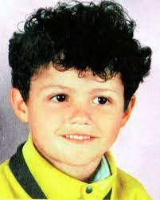
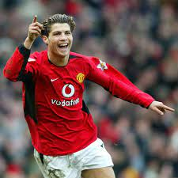
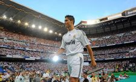
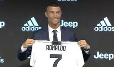
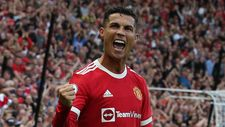

Ronaldo was born on February 5, 1985, in Funchal, Madeira, Portugal, a small island off the western coast of the country. Ronaldo is the youngest of four children born to Maria Dolores dos Santos and José Dinis Aveiro. He was named after Ronald Reagan, one of his father's favorite actors. Ronaldo grew up in a largely working class neighborhood in a small tin-roofed home that overlooked the ocean. Ronaldo was introduced to the game of soccer through his dad, who worked as an equipment manager at a boy's club. His early life was shaped by hardship, as his father often drank too much. To help keep the children fed and maintain some financial stability, Ronaldo's mother worked as a cook and cleaning person. In 2005, when Ronaldo was playing for Manchester United, his father died from alcohol-related kidney problems; in 2007, his mother struggled with breast cancer. The former was especially hard for Ronaldo since he and his dad had been close. The young athlete had often pushed for his father to enter rehab and address his drinking. His father, however, never accepted the offer. By the time he was 10 years old, Ronaldo was already recognized as a phenomenon — a kid who ate, slept and drank soccer. "All he wanted to do as a boy was play football," his godfather, Fernao Sousa, recalled for British reporters, adding, "He loved the game so much he'd miss meals or escape out of his bedroom window with a ball when he was supposed to be doing his homework." By his early teens, Ronaldo's talent and legend had grown considerably. After a stint with Nacional da liha da Madeira, he signed with Sporting Portugal in 2001.
In 2001, when Ronaldo was just 16 years old, Manchester United paid more than £12 million to sign him — a record fee for a player of his age. Ronaldo had turned heads with a mesmerizing performance with Portugal against Manchester, wowing even his opponents with his footwork and deft skill. He made such an impression that a number of United players asked their manager to try and sign the young player, which the team soon did. Ronaldo did not disappoint the soccer world: He showed his promise early on in the 2004 FA Cup final, scoring the team's first three goals and helping them capture the championship. In 2007, Ronaldo signed a five-year, £31 million contract. A year later, Ronaldo again justified his high salary when he put together one of the club's finest seasons in history, setting a franchise record for goals scored (42), and earning himself the FIFA World Player of the Year honor for 2008. In all, Ronaldo helped steer Manchester United to three premier league titles.
In 2009, the Spanish soccer club Real Madrid agreed to pay Manchester United a record $131 million for the chance to sign Ronaldo. Ronaldo’s commitment to Manchester United had come under constant question, and speculation swirled that he wanted to play elsewhere, so nobody was all that surprised to see Ronaldo leave. "I know that they are going to demand a lot of me to be successful at the club and I know that I'm going to have much more pressure than at Manchester United because I was there for many years," Ronaldo told reporters. "But it means a new challenge and is going to help me be the best footballer." Ronaldo went on to compile an impressive list of individual honors and team trophies. In December 2016, he won his fourth Ballon d'Or award as the sport's player of the year, beating out FC Barcelona's Lionel Messi. Ronaldo’s 2016 wins included the European Championship, Champions League and Club World Cup, plus individual awards from UEFA and France Football magazine. The following year, he claimed a fifth Ballon d'Or to tie the mark held by his longtime rival, Messi.
After dropping hints that his time with Real was coming to an end, Ronaldo confirmed the rumors in July 2018 by signing with Italian Serie A club Juventus, which paid a $140 million transfer fee to his old Spanish club. Ronaldo paid tribute to Real fans in an open letter on the club's website, writing: "These years at Real Madrid and in this city of Madrid have quite possibly been the happiest years of my life. I only have feelings of great gratitude to this club, to the fans and to the city. I can only give thanks to all of them for the love and affection that I have received." By most measures, Ronaldo's debut season with Juventus was a successful one. He scored 10 times in his first 14 games, and headed home the lone goal in a win over AC Milan for the Supercoppa Italiana trophy. After leading his club to its eighth consecutive Serie A title, he was named the league's MVP in May 2019.
On August 27, 2021, it was announced that Ronaldo would return to Manchester United. His Return so far has lead to 10 goals and 2 assists in 14 matches at the time of writing. Cristiano Ronaldo is showing that even at the age of 37 he is still one of the best and contributing at a very high level.